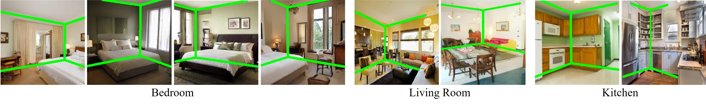
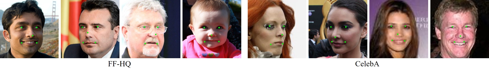
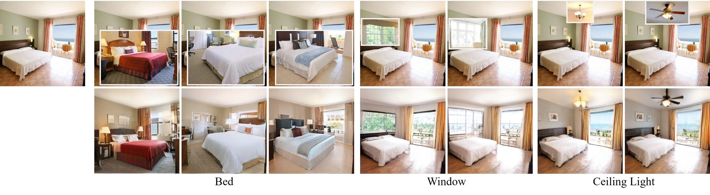
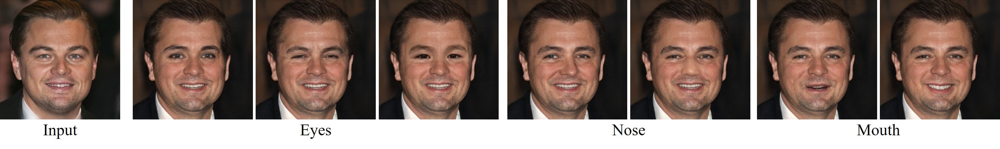

Generative Hierarchical Features from Synthesizing Images
The Chinese University of Hong Kong
Discriminative Tasks
Indoor scene layout prediction
Facial landmark detection
Generative Tasks
Image harmonization
Local Editing

@article{xu2020ghfeat,
title = {Generative Hierarchical Features from Synthesizing Images},
author = {Xu, Yinghao and Shen, Yujun and Zhu, Jiapeng and Yang, Ceyuan and Zhou, Bolei},
journal = {arXiv preprint arXiv:2007.10379},
year = {2020}
}

Comment: Proposes style-based generator for high-quality image synthesis.